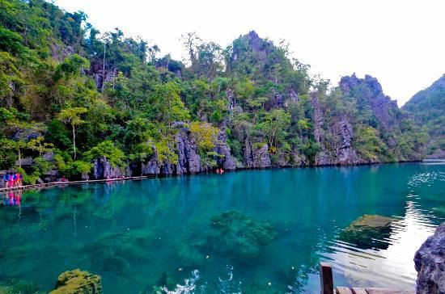

Historical and Archaeological Exploration
- Coron is renowned for its underwater heritage, particularly the remains of Japanese warships sunk during an air raid by the American Navy on September 24, 1944.
- Popular wreck sites include the Irako Maru (a refrigeration ship), Okikawa Maru (an oil tanker), Akitsushima (a seaplane tender), and other vessels like the Olympia Maru and Lusong Gunboat.
- These sites serve as historical artifacts and are now major attractions for divers.
World War II Shipwrecks

- Known for its unique thermocline effect, Barracuda Lake not only offers fascinating natural wonders but also holds historical significance, with its formation and ecosystem reflecting the geological history of the area.
Barracuda Lake

- The Tagbanua have a rich, spiritual connection with their environment, honoring ancient customs, particularly in relation to the sea and forest, which are seen as sacred domains. For the Tagbanwa, the sea is a source of life and a realm of spirits—an understanding that has shaped much of Coron’s early history.